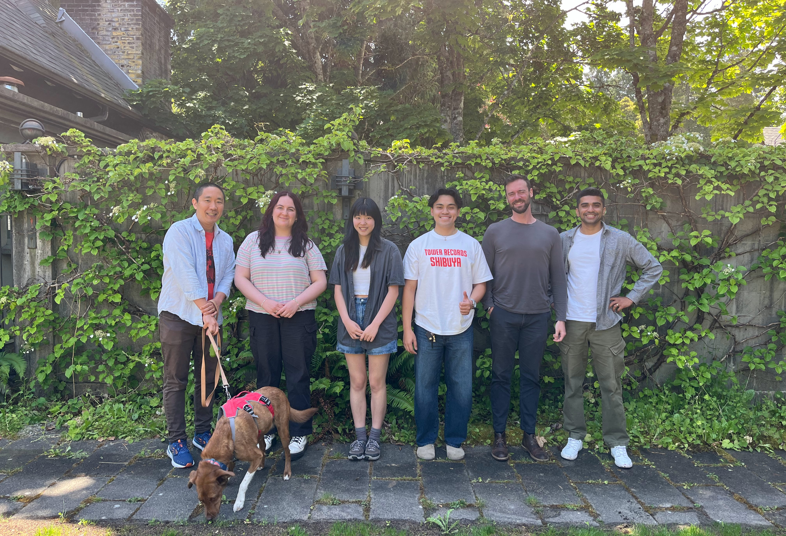
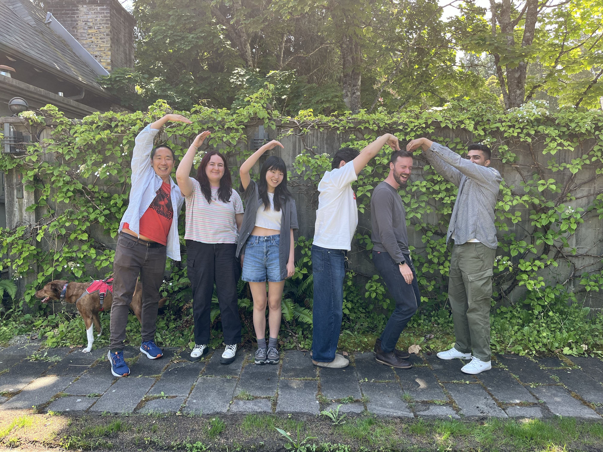

<div class='container'>
    <header class="masthead text-center">

<!--        -->
      
      <!-- Image slideshow starts here -->
      

    <script>
      const images = [
        "images/gallery/UBC.jpg",
        "images/gallery/lab-outside-june25.jpg",
        "images/gallery/lab-ccm-june25.jpg"
        // Add more image paths here
      ];
      let currentImage = 0;

      function showNextImage() {
        currentImage = (currentImage + 1) % images.length;
        document.getElementById('slideshow').src = images[currentImage];
      }

      setInterval(showNextImage, 3000); // Change image every 3 seconds
    </script>
    <!-- Image slideshow ends here -->


<!--     <div class="photo-gallery" style="display: flex; flex-wrap: wrap; gap: 10px; justify-content: center;">
        
        
        
  <!-- Add more photos as needed -->

      <p>
        <b><font size="+1">Welcome to the Computation, Cognition, and Movement (CCM) Lab at The University of British Columbia! We are a research group studying human motor learning.</font></b>
        <ol>  
      <i>the human body <br> 
          moves with purpose, ease and grace <br>
          how does it do so? <br></i>
        </ol>
        
        <span style="display: block; margin-bottom: 3em"></span>

      <a href="https://github.com/ccmlab-ubc"><i class="fa fa-github"></i> CCM Lab</a>&nbsp;&nbsp;&nbsp;
      <a href="mailto:hyosub.kim@ubc.ca"><i class="fa fa-envelope-o"></i> hyosub.kim@ubc.ca</a>
      </p>

      <div class="w3-container" style="   background: #f0f8ff; padding: 25px; border-radius:10px; border: 1px solid #5d8aa8">
        <div style="text-align:left">
          <h3> Recent News </h3>
<!--           <u>Happenings of the last few months</u> -->
          <span style="display: block; margin-bottom: 1em"></span>
          <div class="news">
              {% capture now %}{{'now' | date: '%s' | minus: 31104000 %}}{% endcapture %}
              <ul style="list-style-position:outside;padding:20px" >
                {% for new in site.data.news %}
                  {% capture date %}{{new.date | date: '%s' | plus: 0 %}}{% endcapture %}
                  {% if date > now %}
                    <li>
                      <span>
                        {{ new.details }}
                      </span>
                    </li><br>
                  {% endif %}
                {% endfor %}
              </ul>
          </div>
        </div >
      </div>

    

      <span style="display: block; margin-bottom: 3em"></span>


<!--       <a class="twitter-timeline" href="https://twitter.com/KordingLab" data-widget-id="695051708246941697">Tweets by @KordingLab</a>
      <script>!function(d,s,id){var js,fjs=d.getElementsByTagName(s)[0],p=/^http:/.test(d.location)?'http':'https';if(!d.getElementById(id)){js=d.createElement(s);js.id=id;js.src=p+"://platform.twitter.com/widgets.js";fjs.parentNode.insertBefore(js,fjs);}}(document,"script","twitter-wjs");</script> -->

      <span style="display: block; margin-bottom: 3em"></span>
    
    <span style="display: block; margin-bottom: 3em"></span>

    <div style="text-align: left; background: #f9f9f9; padding: 20px; border-radius: 8px; border: 1px solid #ccc;">
      <h3>Acknowledgments</h3>
      <p>
        We acknowledge the Natural Sciences and Engineering Research Council of Canada (NSERC), the Canada Foundation for Innovation (CFI), and the B.C. government for their generous support. 
      </p>
    
      <!-- Logos Row -->
      <div style="display: flex; justify-content: center; align-items: center; gap: 50px; flex-wrap: wrap; margin-top: 20px;">
        
        
<!--          -->
      </div>
    </div>


    <span style="display: block; margin-bottom: 3em"></span>
      School of Kinesiology at The University of British Columbia<br>
      Vancouver, BC<br>
    <small><small>(Powered by <a href="http://jekyllrb.com/">Jekyll</a> with <a href="https://github.com/KordingLab/KordingLab.github.io">Kording Lab's</a> template. Photo courtesy of <a href="https://www.flickr.com/photos/ubcpublicaffairs/11970021376">UBC</a>.</small></small>)
      <span style="display: block; margin-bottom: 3em"></span>

    </header>
</div>
